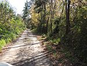
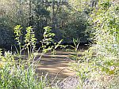
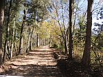
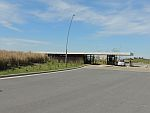
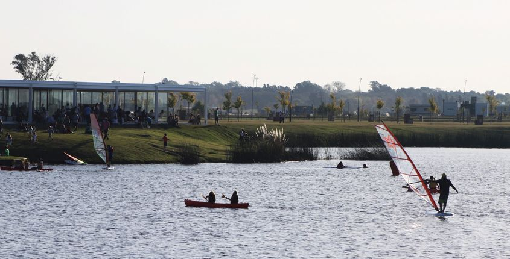

<!DOCTYPE html PUBLIC "-//W3C//DTD XHTML 1.0 Strict//EN" "http://www.w3.org/TR/xhtml1/DTD/xhtml1-strict.dtd">
<html xmlns="http://www.w3.org/1999/xhtml">
<head>
<title>Lotes Puertos</title>
<meta http-equiv="Content-Type" content="text/html; charset=utf-8" />
<meta name="viewport" content="width=device-width, initial-scale=1.0, maximum-scale=1.0, user-scalable=yes">
<link rel="stylesheet" href="//cdn.leafletjs.com/leaflet-0.7.5/leaflet.css" />
<link rel="stylesheet" href="src/leaflet-gps.css" />
<link rel="stylesheet" href="style.css" />
</head>

<body>
<div id="map"></div>
<br />

<script src="//cdn.leafletjs.com/leaflet-0.7.5/leaflet.js"></script>
<script src="//code.jquery.com/jquery-2.1.4.min.js"></script>

<script src="src/leaflet-gps.js"></script>
<script src="//maps.google.com/maps/api/js?v=3&sensor=false"></script>
<script src="layer/tile/Google.js"></script>

<script>
	var map = new L.Map('map', {zoom: 20, center: new L.latLng([-34.328482, -58.727546]) });

	var ggl = new L.Google();
	map.addLayer(ggl);

	//map.addLayer(new L.TileLayer('http://{s}.tile.openstreetmap.org/{z}/{x}/{y}.png'));	//base layer

	map.addControl( new L.Control.Gps({autoActive:true}) );//inizialize control

	L.marker([-34.320214, -58.707978]).addTo(map).bindPopup("</img><br>La reserva");
	L.marker([-34.316927, -58.709416]).addTo(map).bindPopup("</img><br>La reserva");
	L.marker([-34.324804, -58.703193]).addTo(map).bindPopup("</img><br>La reserva");
	L.marker([-34.353600, -58.735600]).addTo(map).bindPopup("</img><br>Acceso Principal");
	L.marker([-34.343600, -58.726500]).addTo(map).bindPopup("</img><br>Restaurant");
fil
	L.tileLayer.wms("http://gis.avpuertos.com.ar:8080/geoserver/prt/wms", {
//	L.tileLayer.wms("http://181.14.235.210:8080/geoserver/prt/wms", {
//	L.tileLayer.wms("http://10.0.0.50:8080/geoserver/prt/wms", {
				layers: 'prt:puertos',
				format: 'image/png',
				transparent: true,
				version: '1.3.0',
				attribution: "Puertos/GIS"
		}).addTo(map);

	$(window).on("resize", function() {
		$("#map").height($(window).height()).width($(window).width());
		map.invalidateSize();
	}).trigger("resize");

</script>

<script>
(function(i,s,o,g,r,a,m){i['GoogleAnalyticsObject']=r;i[r]=i[r]||function(){
(i[r].q=i[r].q||[]).push(arguments)},i[r].l=1*new Date();a=s.createElement(o),
m=s.getElementsByTagName(o)[0];a.async=1;a.src=g;m.parentNode.insertBefore(a,m)
})(window,document,'script','//www.google-analytics.com/analytics.js','ga');
ga('create', 'UA-75095221-1', 'auto');
ga('send', 'pageview');
</script>

</body>
</html>
